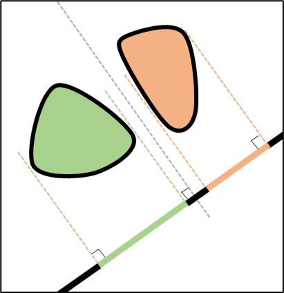

The separating straight line has a normal axis

We project the shapes on the axis

Their projections do not overlap : there are no collisions!

No matter the axis we take, the projections overlap : there is a collision!